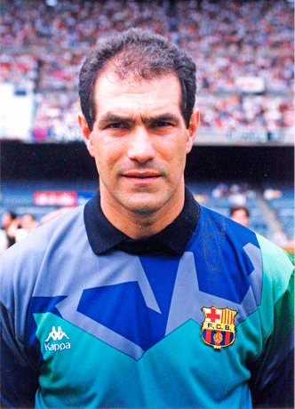
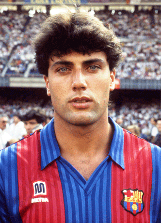
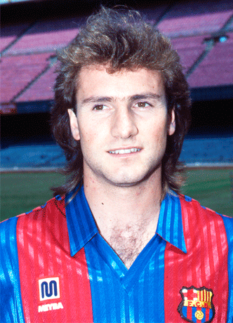
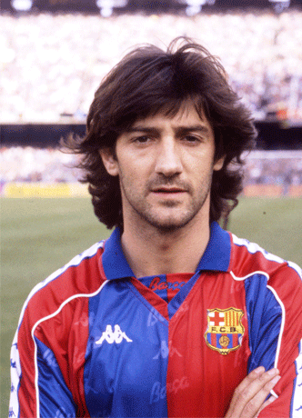
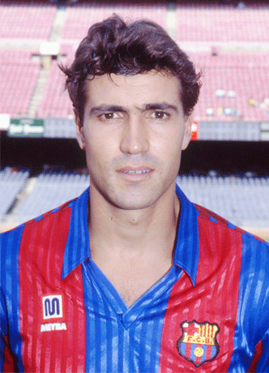
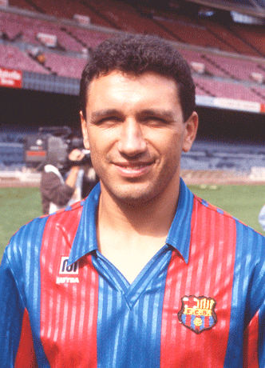

Click a player for facts

1. Zubizarreta (C)

2. Nando

3. Albert Ferrer

4. Ronald Koeman

5. Juan Carlos

6. José Mari Bakero

7. Julio Salinas

8. Hristo Stoichkov

9. Michael Laudrup

10. Pep Guardiola
